鱗 / 2023
 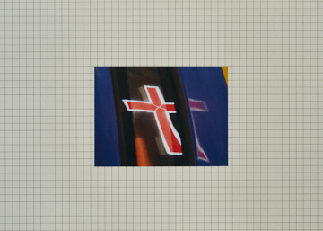
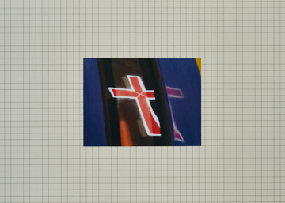

 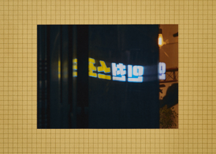
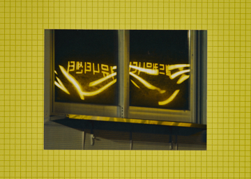
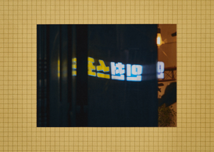
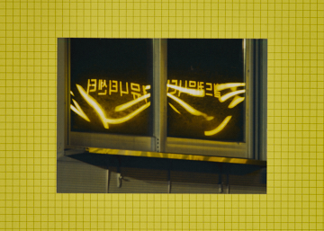
 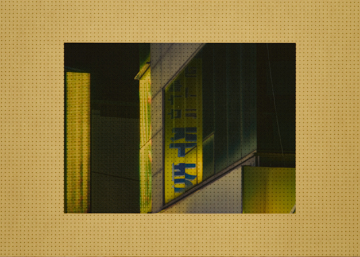
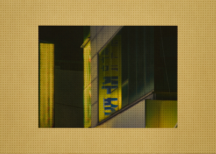

 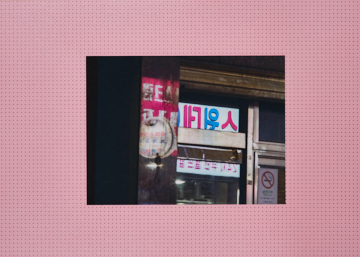
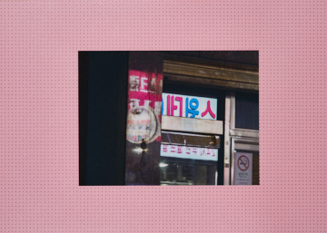

 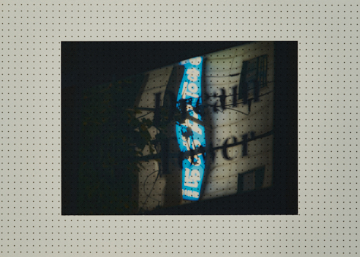
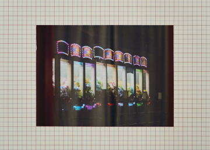
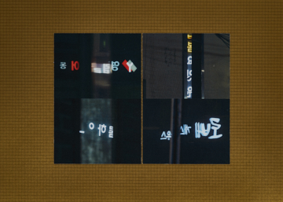
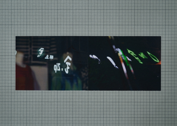
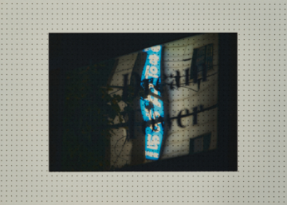
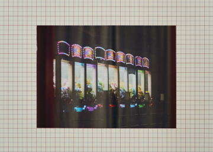
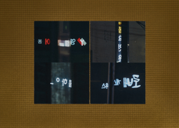
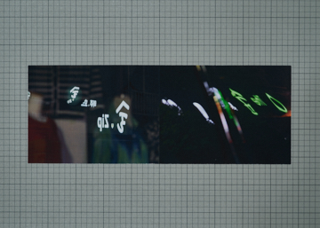
 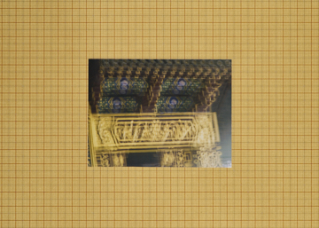
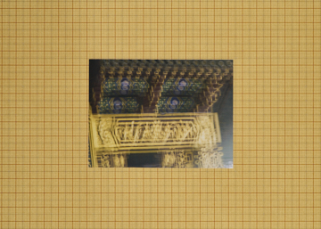
 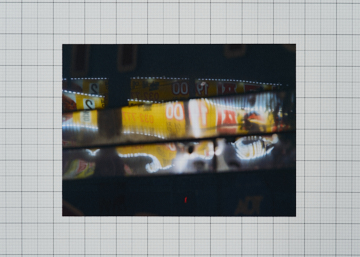
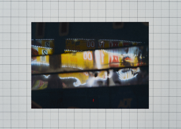

窓ガラスたちは
酔っぱらった赤い顔で
めちゃくちゃに笑いながら
あの向こうの海で
踊っているのに
— 仁川万国公園、イ・ギョンソン
水の道が変わり、侵食の場所には堆積の歴史がある。幾層にも重なった名はあらゆる亡霊を呼び込み、別の戦場となった。
何度か登ったことがあるのに、今になって初めてマッカーサー将軍の像と向き合う。うわべのない人々とともに海に背を向け、あてもなく歩いた。
大きな三脚が目についたのか、ほろ酔いの男が近づいてきた。彼は軽く家の方角を指差した。近隣のどこからでも見える再開発地区の新築マンションだという。
生まれてからずっと暮らしてきた町だと言い、行き方を教えて別れたが、ほどなくして遠くから私を呼び止めた。
信用できなかったのか、最近放映されたドラマのロケ地へ自ら案内してくれた。
子どもの頃から友だちと遊んだ場所なので、すぐに分かったのだそうだ。異国風の構造をした、古びた建物の中の小さな路地だった。
つかの間の興味を見せただけで、他に目を向けるところもないまま、彼はドラマの一場面を説明し始めた。通り過ぎてもよい台詞を暗唱して演技を真似し、変な人に見えるだろうと、もう一度自分の素性を名乗った。
知らないドラマだったので会話は滑らかには進まず、自然と背を向けてその場を離れた。
とりわけデコボコした路面には、見覚えのある六角形の歩道ブロックが盛り上がっている。古くなって剥がれ始めたのか、もはや手入れをしていないようでもあった。
あるいはかろうじて繋ぎ止めているのかもしれない。色褪せる歴史の断片よりも、かつて輝いていた彼の鱗を見せたかったのかもしれない。

ATM, James Prez
参照
- 2023、『イメージで渡ってきた詩たち』、韓国近代文学館、仁川、グループ展